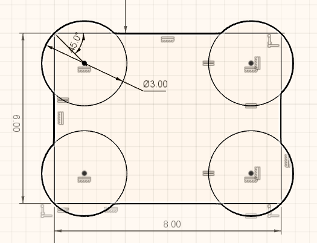
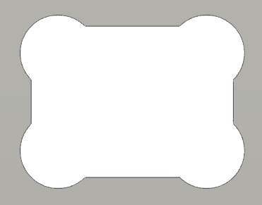
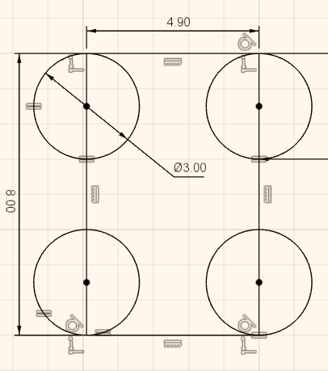
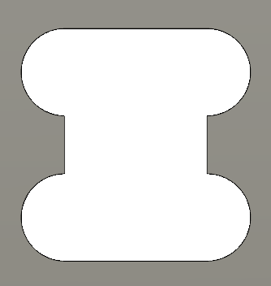

Sketches
Fully defined sketch
-
All sketch lines should be black, which means that the sketch is fully defined. It should not be possible to drag any of the lines or points.
-
Use dimensions and constraints to define the sketch.
-
Do not use Fix constraint. Fix constraint can be used to temporarily keep parts of the sketch in place while working with a complex sketch, but should be removed and replaced with proper dimensions and constraints.
Sketch complexity
-
Keep sketches as simple as possible.
-
Complex sketches can get slow and hard to change.
-
Instead of using mirroring and patterns on the sketch, use corresponding features.
Construction lines
Marking lines for construction can be used for defining a sketch. Construction lines do not appear as part of sketch profile.
For example construction line can be used to center a circle in a rectangular area. Circle can get off-center when fixed dimensions are used and the size of the rectangle changes.
General
Project structure
-
Create separate design file for each component.
-
Use subassemblies.
-
Use folders for subassemblies.
Example project structure:
-
robot (assembly)
-
thrower (folder)
-
thrower (assembly)
-
thrower-side
-
thrower-ramp
-
thrower-motor
-
-
motion (folder)
-
wheel-module (assembly)
-
wheel
-
wheel-motor
-
wheel-motor-mount
-
-
chassis (folder)
-
electronics (folder)
Inside sharp corners
When milling inside corners, the minimum corner radius will the same as the tool radius. For example 1.5mm for a tool with a diameter of 3mm.
Rounded corners can interfere when parts are joined together.
It is possible to cut the corners to avoid interference by doing a circular cut in each corner. Those cuts are often called dogbones.
 
To avoid faces of narrower features getting to short, it is possible to move the circles.
 
Fasteners
When using bolts to attach parts together, usually only the last part should be threaded. Other parts should have plain holes through them. For M3 bolts create 3mm through holes.
Consider using counterbore holes when the design does not allow for protruding bolt heads.
Material thickness
When designing parts for some existing sheet of material, do not use the nominal thickness. Measure the actual material and use it in the design.
Tolerances
To ease the assembly of chassis parts, it is a good idea to design/manufacture them with looser fit.
Read more about engineering fit.
One option is to design parts with looser fit. For example it is possible to create offset sketch to cut a hole larger.
Another option (and usually better) is to use negative Radial Stock to Leave in a CAM operation.
Use Extent: To Object
When cutting through a part, prefer To Object instead of Distance. When the dimensions of the object change, the cut might not go all the way through the part.
Assemblies
-
Similar to fully defining the sketch, use joints to fully define the position of parts. On the first component it is possible to use Ground from right click menu or use joints to constrain the component to the origin.
-
Check that the holes that need to be aligned are aligned.
-
Use Interference tool from INSPECT menu to check that parts too not collide.
Electronics
Wires and cables
-
Think where the cables will go.
-
Leave enough room for the cables.
-
Try to reduce the length of the cables by having electronics closer to each other.
-
Add models of the electronics and connectors to the assembly to make sure there is enough room.
-
Those models do not have to be very detailed.
-
-
Make sure that cables to not extend outside the chassis.
-
Consider the rigidity of the cables and how much they bend.
Camera
More information about RealSense D435 camera:
https://www.intelrealsense.com/depth-camera-d435/
RGB sensor is located on the side of the camera. Consider having the camera offset from the center of the robot. It is easier to write robot software if the RGB sensor is located at the center in sideways direction.
Angle and position
Specs state that the vertical FOV (field of view) is 42.5°.
For the camera to be able to see to the end of the field, top of the vertical FOV should be horizontal (parallel with the court). Pointing camera higher than that is generally not useful, because the camera starts seeing things over the walls.
It is useful to see the ball that is close to the thrower. Otherwise the robot must move blindly for some distance to throw. If the distance is small, then it does not matter too much.
Having the camera higher helps to separate the objects on the camera’s frames.
PC power adapter socket
Link to the socket:
https://www.tme.eu/ee/en/details/pc-gm2.5/dc-power-connectors/ninigi/
Since the thread on the socket is not long enough for over 3mm thickness, it is recommended to sink the socket into the material.
Recommended cutout:
Switches
Link to the switch:
https://www.tme.eu/ee/en/details/ae-c1500abbb/rocker-switches/bulgin/c1500abmbb/
Relevant dimensions from the datasheet:
Cutout and bezel:
Panel thickness:
To avoid milling from both sides, if the switch and the PC power adapter socket are connected on the same part, the following cutout is recommended:
Chassis
-
Recommended bottom clearance is about 5 - 10 mm.
-
Make sure that chassis covers everything that is not in the allowed color, including wheels.
Thrower
-
Make sure that thrower motor is not too high from the ground that it can’t grab the ball.
-
Make sure that the ball is not too loose in the thrower. Distance between the motor and the ramp should provide enough friction between motor and the ball to effectively throw the ball.
-
Create a spacer for the motor so that the motor is closer to the center of the thrower.
-
Make sure that there is room for the motor wires and that the wires do not collide with the ball.
-
When using fixed throwing angle, try to use throwing angle larger than 45 degrees and smaller than 90 degrees (straight up). Around 50 to 70 degrees should work.
-
Make sure that the path of the ball into and through the thrower is not obstructed by anything.
Manufacturing
-
When designing the parts, consider how they are manufactured (for example milled).
-
When designing for milling it is useful to ensure that all the cuts can be made from one side. This reduces the time spent on manual operations.
-
If there are cuts that need to be made from both sides of the sheet, ensure that there are holes that are symmetric in some axis, so that after flipping the part the features stay in the same place relative to the zero point.